My name is arjun today may I end my life I don't even know the exact reason to end my life cause I have great parents and a great brother but the outsiders the childhood bullying trauma may get me to this situation but before ending it I want want to tell all you about my story as a loser as an average gen z kid
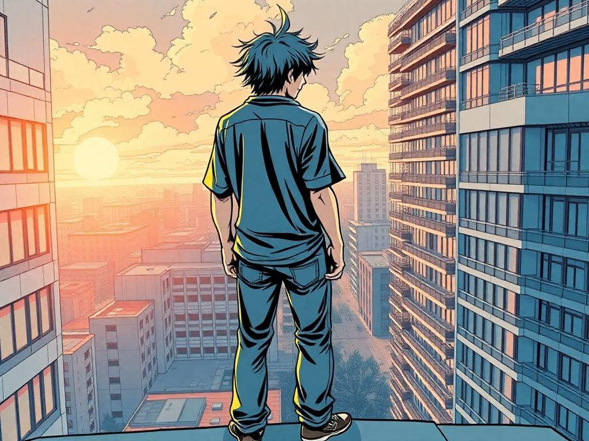
The Beginning of My Story
From the age of five, my life seemed to be dictated by others. People in our colony mocked my parents, questioning why I hadn't been sent to school yet. They would say, "He’ll be the dumbest of all." But my parents never cared about their opinions. My mother had already taught me everything I needed, so when I finally joined school, I wasn’t behind—I was ahead. Yet, the start wasn’t easy. I hated going to school, cried endlessly, and even tried to escape by snatching my dad’s bike keys just to stay home. But my parents stood by me, giving me the space to grow at my own pace.
Within just a few days of kindergarten, my teacher noticed my skills and suggested I skip a grade. That should have been a proud moment. Instead, it marked the beginning of a relentless struggle bullying, harassment, and isolation. One of my earliest memories of school is of a boy randomly beating me up for no reason. My mother, who came to feed me lunch, gently told him, "Don’t do this. You all are friends." But that moment foreshadowed what was to come.
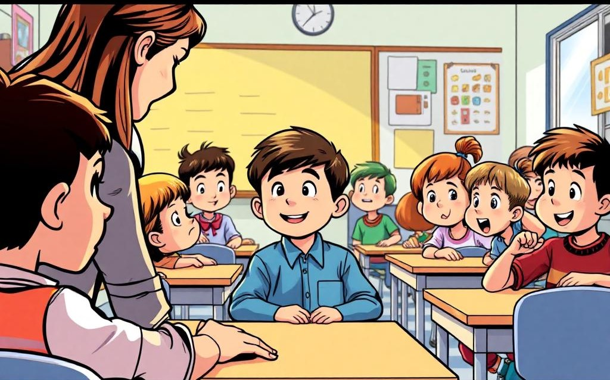At first, I wasn’t great in school, but my mother taught me, and I worked hard. Soon, I was consistently securing the first rank. But even that came with its own struggles. Once, a boy named Rakesh tricked me, saying that whoever submitted their paper first would get the highest rank. I believed him and rushed to turn in my exam. When I told my mother, she simply laughed and explained how ranking really worked. I even remember not knowing how to check my marks seeing "10/25" and wondering why 25 was below and 10 was above! But no matter how well I performed, people tried to tear me down. A teacher once accused me of "byhearting" (memorizing without understanding), a term I had never even heard before. When I asked my mother what it meant, she assured me I wasn’t doing that. Yet, the teacher’s words stung.
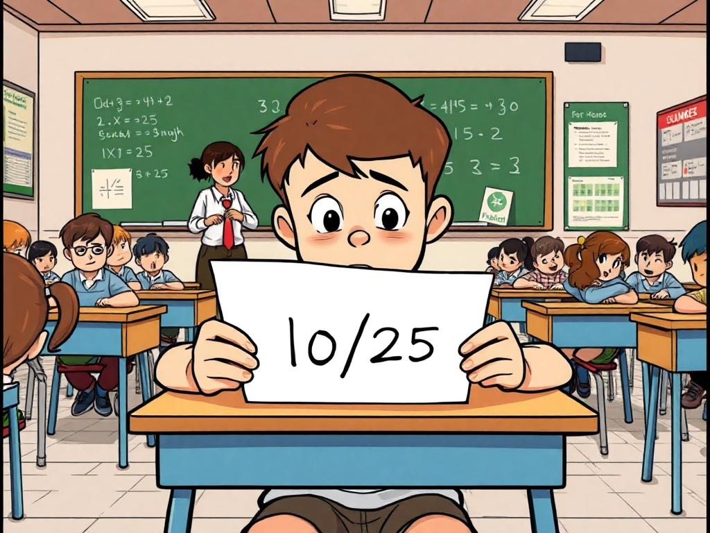Despite excelling in studies, I was an easy target. Every day, someone would pick a fight with me for no reason. I told my parents, and my father even complained to the teacher. But instead of addressing the bullies, the teacher simply asked, "Why do they only bully you?" That question haunted me. Once, a boy named Vignan threw his shoe at my stomach with full force. My father complained again, and the teacher just repeated the same response "Tell us, not your parents." Even teachers joined in. One day, during an exam, a teacher misread my handwriting and marked an answer wrong. When I lightly corrected it with a pencil, she accused me of cheating, dragged me to every class, and humiliated me in front of the entire school. First rank had become an addiction to me. So when I missed an exam due to illness and wasn’t awarded first place, I was devastated. Even when my mother questioned the teacher, she simply dismissed it.
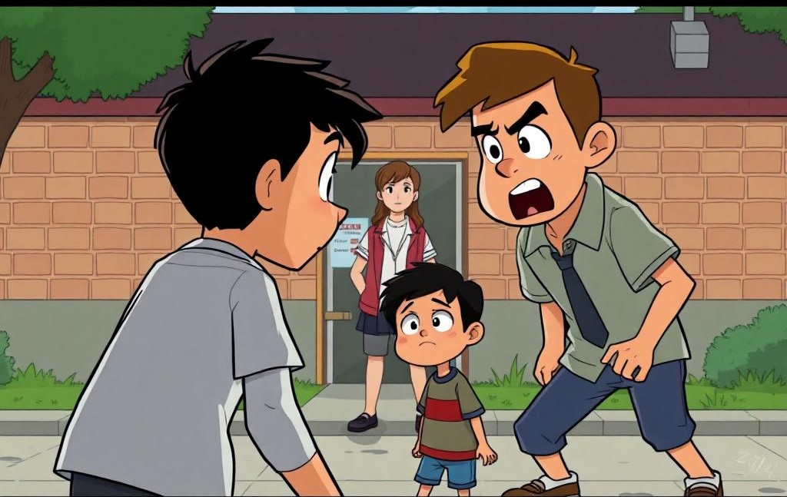 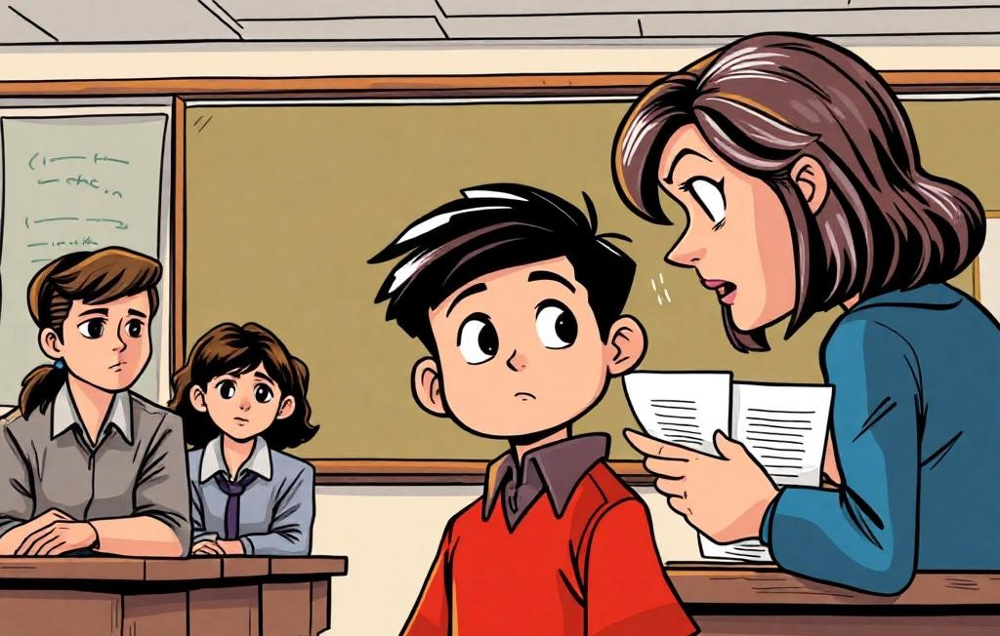In third grade, a new boy, Trinad, joined our class. His mother was our Hindi teacher, and for the first few exams, he outperformed me. It made me realize I had to step up. From then on, I never lost my rank again. But success made my life even harder. A boy named Ajay started bullying me relentlessly. Another classmate, santosh, took a personal grudge against me after I wrote his name on the board for making noise when the teacher was absent. He made his uncle scold me and even had his mother yell at me in front of the whole school Bus.
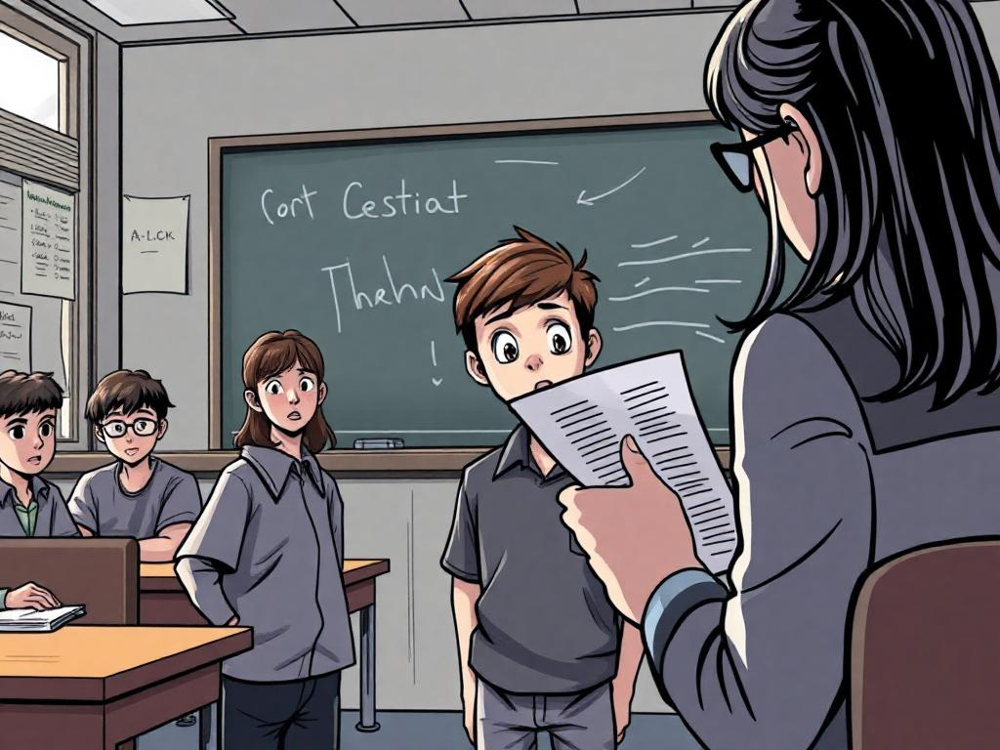 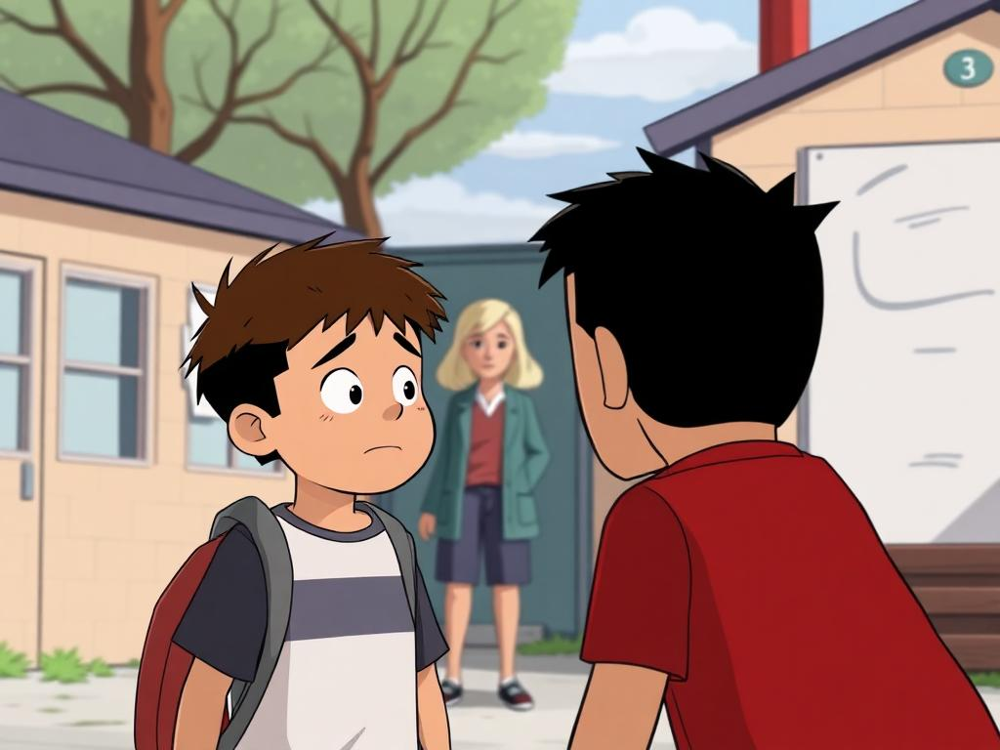In fourth grade, he became my worst nightmare. His bullying was so intense that, at that young age, I didn’t just feel sad I wanted to die. I didn’t even fully understand what death meant, but I knew I wanted to escape the torment. Once, in desperation, I called him a bad word. It wasn’t meant as an insult, just a word I had heard. But he took it to the teacher, and instead of punishing him for his bullying, she made us slap each other as punishment. He slapped me with full force. I barely touched him.
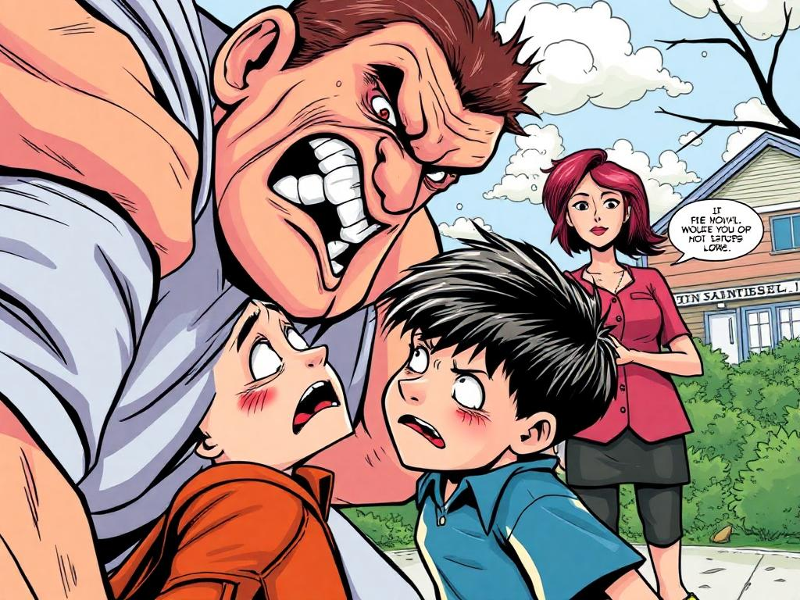Fifth grade was slightly better. Some teachers appreciated my efforts, even if they scolded me at times. One English teacher had a strange rule if you answered incorrectly, another student would slap you. I felt bad when a boy named Abhi got slapped, and I whispered my sympathy to a friend. Somehow, Abhi twisted my words, and I ended up getting scolded instead. Sports was another struggle. I loved cricket but was never picked for teams. The coach scolded me often. But one day, I surprised everyone I played well, took multiple catches, and even got applause from the coach. Dancing was another passion. I hesitated to perform on stage but gave my name for an event. The same coach who scolded me for cricket also trained us for dance. He was harsh, but when I finally danced well in front of the whole school, he clapped for me. It was a rare moment of recognition in a life filled with bullying.
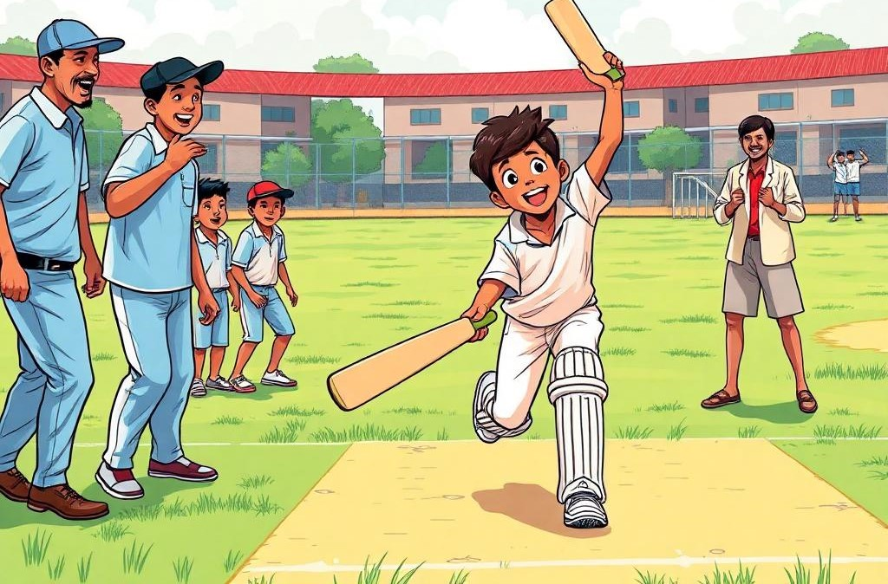 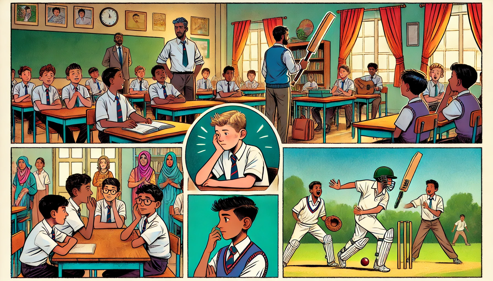At that age, I didn’t fully understand love. I had seen it in movies, but in real life, it was just a strange feeling. There was a girl Reshmika. I didn’t even realize I had a crush on her at the time. I just knew that whenever I saw her, I felt different. I had a small group of friends by then Vignan, Ramu,bhargav. We studied together with reshmika , played together, and spent time near my house and sometimes vignan's house which is near Reshmika’s house. One day, I said something stupid I talked about ghosts in the street. Two days later, Ramu’s father died. I don’t believe in superstitions, but even now, I remember that moment.
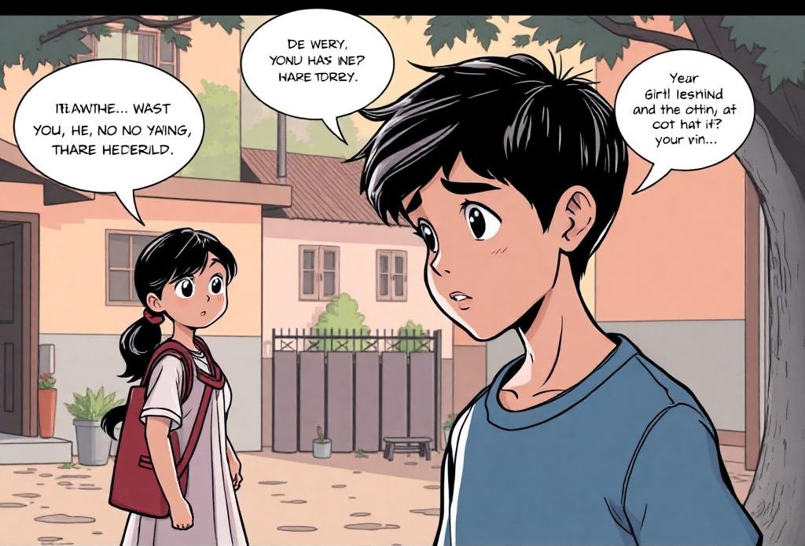